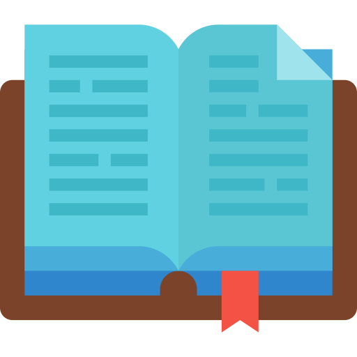
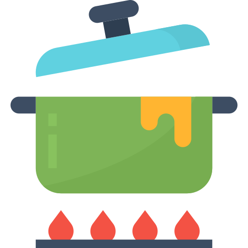

Fase 1
Recém saída do ensino médio em 2011, decidi fazer cursos em Gastronomia. Nessa jornada, notei que a gastronomia não fora escolhida pela profissão mas sim por amor a esse hobbie, que fazia reunir a familia e os amigos para comemorações surpresas sempre envolta de muita comida caseira. Após terminar o curso, decidi não seguir esse caminho e entrei em uma faculdade de Administração e Comércio Exterior, fiz dois estágios para a área, onde no último consegui estagiar em uma organização que me promoveu para a área de atendimento ao cliente no meio do Turismo, que é onde estou até hoje, atualmente como Senior II. Assim desenvolvi diversas softs skills como liderança, teamwork, flexibilidade e dinamismo.
Fase 2
Durante a faculdade de Administração, em uma matéria de informática empresarial no final do curso, comecei a ver a internet das coisas, algoritmos e o básico de HTML, que foi onde despertou meu interesse pelo vasto mundo dos códigos. Ali, me caiu a ficha que o que eu queria era entender mais e mais sobre esse mundo tech e o brilho nos olhos que eu sempre procurei veio à tona.
Fase 3
Concluí a 1ª faculdade e decidi iniciar uma 2ª faculdade, agora de Engenharia de Software, alinho junto aos estudos à parte e também com o trabalho fixo do atendimento ao cliente. Irei aprender sempre e ao meu máximo para que no futuro eu possa também monitorar outras pessoas e ajuda-las a ingressarem nesse mercado, que além de promissor é muito importante para a nossa contínua evolução. A curiosidade me move, a vontade ajudar aos outros me move, então continuarei me movendo em busca de um mundo com maiores e melhores oportunidades para mim e para todos.
Para maiores informações:
Veja meu curriculoMinhas Habilidades:
- Comunicação assertiva
- Negociação
- Pró-atividade
- Flexibilidade
- Teamwork
- Liderança
O que estou aprendendo


Hobbies
 